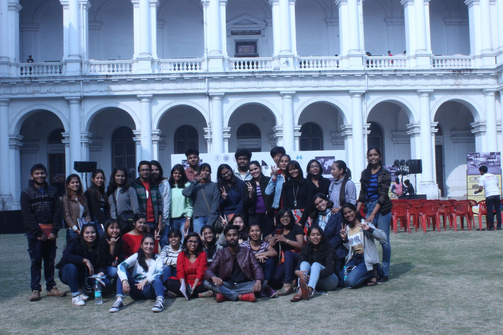
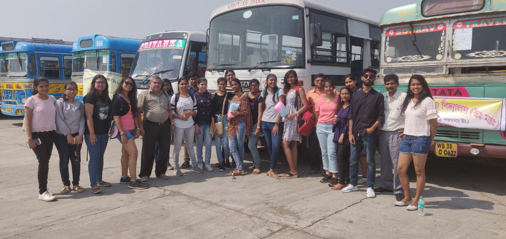
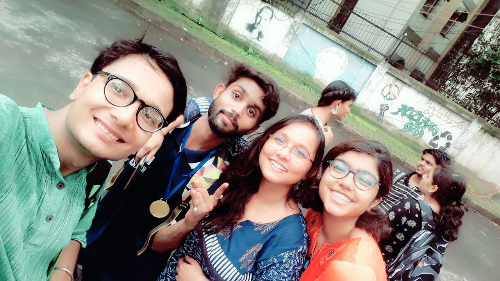
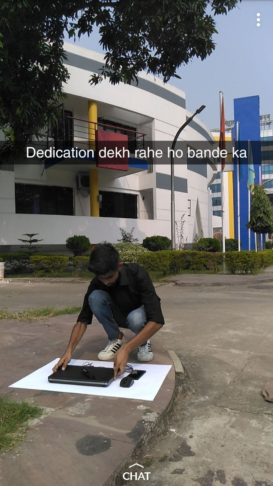
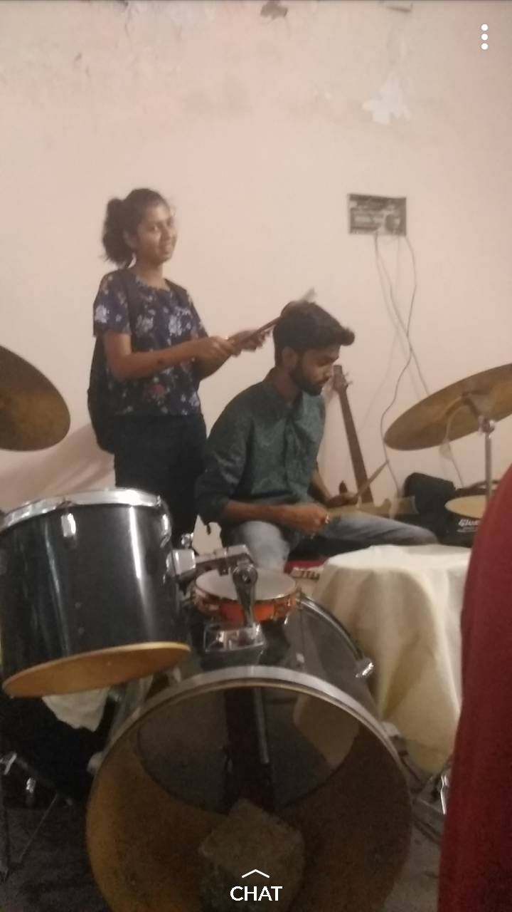
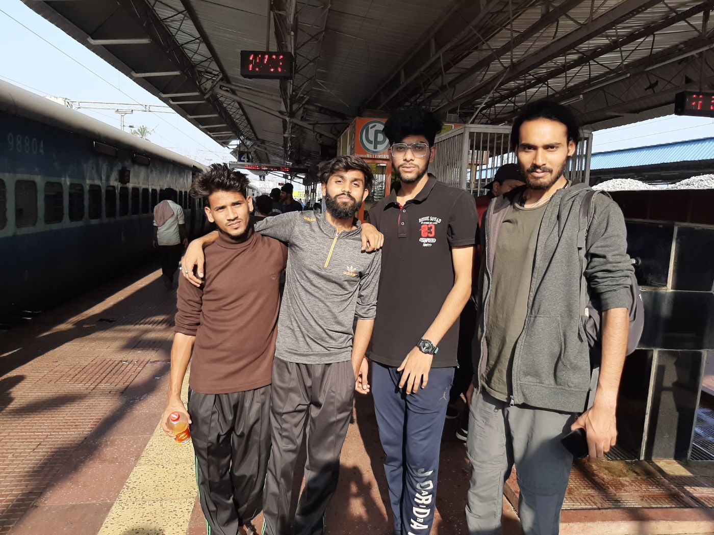

FRAME 01

Orientation · 2018
Whole batch on the museum field trip — day one, everyone still strangers.
Before the design systems and the driver apps, there was a B.Des at NIFT Kolkata — four years of all-nighters, jury panic, fashion shows, far too much chai, and the city that quietly taught me what design is actually for. A scrapbook from where it all started.

Whole batch on the museum field trip — day one, everyone still strangers.

The annual industry visit. Cotton candy for breakfast, somehow.

Squad selfie right after the medal — sweaty and very pleased.

“Dedication dekh rahe ho bande ka” — shooting flat-lays on the pavement.

Late-night music between deadlines. Half the batch could play something.

4 AM platform, running on chai and zero sleep.
The all-nighters paid off — here’s what they turned into.